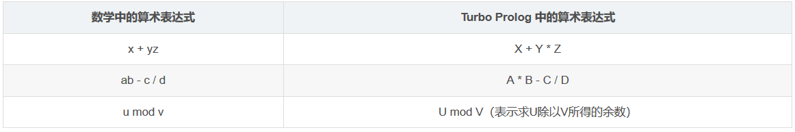

原文连接:https://www.cnblogs.com/wkfvawl/p/12056951.html
最近在复习人工智能导论，里面介绍了一种逻辑关系语言PROLOG，但这本书里面用到的编译器是Turbo PROLOG，这个编译器早就被淘汰了，我后来找的了它的升级版Visual PROLOG，但一些语法也发生了变化，现在好像用起来不错的是SWI PROLOG ，这里处于复习的目的，把书上关于PROLOG的相关内容保存到这里，下面一些代码我尽可能的使用SWI PROLOG跑一跑，学习一下。
摘自《人工智能技术简明教程》–廉师友 编著
Prolog 概念
Prolog（PROgramming in LOGic的缩写）语言是一种基于 [Horn 子句的逻辑型程序设计语言，也是一种陈述性语言。 Prolog 与人工智能的知识表示、自动推理、图搜索、产生式系统和专家（知识）系统有着天然的联系，很适合智能程序设计。 若想详细了解可自行百科：http://baike.baidu.com/item/Prolog
今天我们先搞明白 Prolog
语言的基本原理，然后再详细学习一下 Turbo Prolog 语言程序设计。选择 Turbo Prolog
是因为它是一个功能较齐全的逻辑程序语言，其程序的可读性强而且简单易学，是一个很好的教学语言。另外， Turbo Prolog 程序既可以在
Trubo Prolog 和 PDC Prolog 环境下运行或编译，又可以在当前流行的可视化语言 Visual Prolog
的环境下运行或编译。
Prolog 基础
一、Prolog 的语句
Prolog 语言仅有三种语句：事实（Fact）、规则（Rule）和问题（Question）。
1、事实
格式：
<谓词名>(<项表>). 谓词名是以大小写字母开头，字母、数字、下划线等组成的字符串；
项表是以逗号隔开的项序列。
Prolog 中的项包括由常量或变量表示的简单对象以及函数、结构和表等，即事实的形式是一个原子谓词公式。
功能：
一般表示对象的性质或关系。举个例子：
student(john).
like(mary, music).这就是 Prolog 中两个合法的事实。分别表示“约翰是学生”和“玛丽喜欢音乐”。
当然了，作为特殊情形，一个事实也可以只有谓词名而无参量。
举个例子：
abc.
repeat.等也是允许的。
2、规则
格式：
<谓词名>(<项表>):-<谓词名>(<项表>){,<谓词名>(<项表>)}. “:-”号表示“if”（也可以直接写为 if ），其左部的谓词是规则的结论（亦称为头），右部的谓词是规则的前提（亦称为体）；
“{}”表示零次或多次重复，逗号表示 and（逻辑与）。
即规则的形式是一个逻辑蕴涵式。
功能：
一般表示对象间的因果关系、蕴含关系或对应关系。
举个例子：
bird(X) :- animal(X), has(X, feather).分别表示“如果 X 是动物，并且 X 有羽毛，则 X 是鸟”和“ X 是Y 的祖父，前提是如果存在 Z，X 是 Z 的父亲并且 Z 又是 Y 的父亲”。
作为特殊情形，规则中的谓词也可以只有谓词而无参量。
举个例子：
run :- start, step1(X), step2(X), end.也是一个合法规则。
3、问题
格式：
?-<谓词名>(<项表>){,<谓词名>(<项表>)}.功能：
问题表示用户的询问，它就是程序运行的目标。举个例子：
?-student(john).
?-like(mary, X).分别表示“约翰是学生吗？”和“玛丽喜欢谁？”。
问题可以与规则及事实同时一起给出，也可以在程序运行时临时给出。
二、Prolog 的程序
Prolog 程序一般由一组事实、规则和问题组成。问题是程序执行的起点，称为程序的目标。我们首先写出一个 Prolog 的程序，如下：（为引用方便起见，我们把这个程序称为“程序0”）
likes(bell, sports).
likes(mary, music).
likes(mary, sports).
likes(jane, smith).
friend(john, X) :- likes(X, reading), likes(X, music).
friend(john, X) :- likes(X, sports), likes(X, music).
?- friend(john, Y).接下来我们分析一下这个程序：
可以看出，这个程序中有四个事实、两条规则和一个问题。其中事实、规则和问题都分行书写；规则和事实可连续排列在一起，其顺序可随意安排，但同一谓词名的事实或规则必须集中排列在一起；问题不能与规则及事实排在一起，它作为程序的目标要么单独列出，要么在程序运行时临时给出。
这个程序的事实描述了一些对象（包括人和事物）间的关系；而规则则描述了
John 交朋友的条件，即如果一个人喜欢读书并且喜欢音乐（或者喜欢运动和喜欢音乐），那么这个人就是 John 的朋友（当然，这个规则也可看做
John 朋友的定义）；程序中的问题是“约翰的朋友是谁？"
prolog运行结果：
Prolog 程序中的目标还可以变化，也可以含有多个语句（上例中只有一个）。如果有多个语句，则这些语句称为子目标。例如对上面的程序，其问题也可以是：
?-likes(mary, X).或
?-likes(mary, music).或
?-friend(X, Y).或
?-likes(bell, sports),likes(mary, music),friend(john, X).等。但对于不同的问题，程序运行的结果一般是不一样的。
还需说明的是，Prolog程序中的事实或规则一般称为它们对应谓词的子句。例如，上面程序中的前4句都是谓词
likes 的子句。 Prolog 规定，同一谓词的子句应排在一起。从语句形式和程序组成来看， Prolog 就是一种基于 Horn
子句的逻辑程序。这种程序要求用事实和规则来求证询问，即证明所给出的条件子句和无条件子句与目标子句是矛盾的，或者说程序中的子句集是不可满足的。这就是所谓的
Prolog 的说明性语义。
从 Prolog 的语句来看， Prolog 语言的文法结构相当简单。但由于它的语句是 Horn
子句，而 Horn 子句的描述能力是很强的，所以 Prolog
的描述能力也是很强的。例如，当它的事实和规则描述的是某一学科的公理，那么问题就是待证的命题；当事实和规则描述的是某些数据和关系，那么问题就是数据查询语句；当事实和规则描述的是某领域的知识，那么问题就是利用这些知识求解的问题；当事实和规则描述的是某初始状态和状态变化规律，那么问题就是目标状态。所以，
Prolog 语言实际是一种应用相当广泛的智能程序设计语言。从上面最后一个目标可以看出，同过程性语言相比，对于一个 Prolog
程序，其问题就相当于主程序，其规则就相当于子程序，而其事实就相当于数据。
三、Prolog 程序的运行机理
要想了解 Prolog 的运行机理，首先需要了解几个基本概念。
1、自由变量与约束变量
Prolog中把无值的变量称为自由变量，有值的变量称为约束变量。一个变量取了某值就说该变量约束于某值，或者说该变量被某值所约束，或者说该变量被某值实例化了。在程序运行期间，一个自由变量可以被实例化而成为约束变量，反之，一个约束变量也可被解除其值而成为自由变量。
2、匹配合一
两个谓词可匹配合一，是指两个谓词的名相同，参量项的个数相同，参量类型对应相同，并且对应参量项还满足下列条件之一。
如果两个都是常量，则必须完全相同。
如果两个都是约束变量，则两个约束值必须相同。
如果其中一个是常量，一个是约束变量，则约東值与常量必须相同。
至少有一个是自由变量。
例如下面的两个谓词：
prel("ob1", "ob2", Z)
prel("ob1", X, Y)只有当变量 X 被约束为"ob2"，且 Y、Z 的约束值相同或者至少有一个是自由变量时，它们才是匹配合一的。
Prolog
的匹配合一，与归结原理中的合一的意思基本一样，但这里的合一同时也是一种操作。这种操作可使两个能匹配的谓词合一起来，即为参加匹配的自由变量和常量，或者两个自由变量建立一种对应关系，使得常量作为对应变量的约束值，使得两个对应的自由变量始终保持一致，即若其中一个被某值约束，则另一个也被同一值约束；反之，若其中一个的值被解除，则另一个的值也被解除。
3、回溯
所谓回溯，就是在程序运行期间，当某一个子目标不能满足（即谓词匹配失败）时，控制就返回到前一个已经满足的子目标（如果存在的话），并撤销其有关变量的约束值，然后再使其重新满足。成功后，再继续满足原来的子目标。如果失败的子目标前再无子目标，则控制就返回到该子目标的上一级目标（即该子目标谓词所在规则的头部）使它重新匹配。回溯也是
Prolog 的一个重要机制。
下面有例子，看完这个 Prolog 程序的运行过程就懂了。
有了上面的基本概念，下面就介绍所 Prolog 程序的运行过程。我们仍以上面给出的 Prolog 程序为例。
设所给的询问是：
?-friend(john, Y). (john和谁是朋友？)则求解目标为：
friend(john, Y).这时，系统对程序进行扫描，寻找能与目标谓词匹配合一的事实或规则头部。显然，程序中前面的 4 个事实均不能与目标匹配，而第 5 个语句的左端即规则为：
friend(john, Y) :- likes(X, reading), likes(X, music).的头部可与目标谓词匹配合一。但由于这个语句又是一个规则，所以其结论要成立则必须其前提全部成立。于是，对原目标的求解就转化为对新目标：
likes(X, reading), likes(X, music).的求解。这实际是经过归结，规则头部被消去，而目标子句变为：
?- likes(X, reading), likes(X, music).现在依次对子目标:
likes(X, reading)和 likes(X, music)求解。
子目标的求解过程与主目标完全一样，也是从头对程序进行扫描，不断进行测试和匹配合一等，直到匹配成功或扫描完整个程序为止。
可以看出，对第一个子目标 like（X, reading）的求解因无可匹配的事实和规则而立即失败，进而导致规则：
friend(john, X) :- likes(X, reading), likes(X, music).的整体失败。于是，刚才的子目标：
likes(X, reading)和 likes(X, music)被撤销，系统又回溯到原目标 friend（john, X）。这时，系统从该目标刚才的匹配语句处（即第 5 句）向下继续扫描程序中的子句，试图重新使原目标匹配，结果发现第 6 条语句的左部，即规则
friend(john, X) :- likes(X, sports), likes(X, music).的头部可与目标谓词匹配。但由于这个语句又是一个规则，于是，这时对原目标的求解就又转化为依次对子目标：
likes(X, sports)和 likes(X, music)的求解。这次子目标 likes（X, sports）与程序中的事实立即匹配成功，且变量 X 被约束为 bell。于是，系统便接着求解第 2 个子目标。由于变量 X 已被约束，所以这时第 2 个子目标实际上已变成：
likes(bell, music).由于程序中不存在事实 likes（bell, music），所以该目标的求解失败。于是，系统就放弃这个子目标，并使变量 X 恢复为自由变量，然后回溯到第一个子目标，重新对它进行求解。由于系统已经记住了刚才已同第一子目标谓词匹配过的事实的位置，所以重新求解时，便从下一个事实开始测试。易见，当测试到程序中的第 3 个事实时，第一个子目标便求解成功，且变量 X 被约束为 mary 。这样，第 2 个子目标也就变成：
likes(mary, music).再对它进行求解。这次很快成功。
由于两个子目标都求解成功，所以，原目标 friend（john, Y）也成功，且变量 Y 被约束为 mary（由 Y 与 X 的合一关系）。于是，系统回答：
Y = mary程序运行结束。上述程序的执行过程如图下所示。
Prolog 程序运行机理图解示例
上述程序的运行是一个通过推理实现的求值过程。我们也可以使它变为证明过程。例如，把上述程序中的询问改为：
friend(john, mary).则系统会回答“yes”。
若将询问改为：
friend(john, smith).
则系统会回答“no”。
这其实也和我们在推理证明中经常问的一个问题：“是不是?"和"是什么?“，二者的难度是一样的！
从上述程序的运行过程来看，
Prolog
程序的执行过程是一个（归结）演绎推理过程。其推理方式为反向推理，控制策略是深度优先且有回溯机制，具体实现方法是：自上而下匹配子句；从左向右选择子目标；（归结后）产生的新子目标总是插入被消去的目标处（即目标队列的左部）。Prolog
的这种归结演绎方法被称为 SLD（Linear resolution with Selection function for Definite
clause）归结， 或 SLD 反驳 - 消解法。这样，SLD 归结就是 Prolog 程序的运行机理，也就是所谓的 Prolog
语言的过程性语义。
Turbo Prolog 程序设计
Turbo Prolog 是一个编译型语言，1986
年由美国的 BORLAND 公司推出，运行在 IBM PC 系列机及其兼容机上。Turbo prolog 除了具有基本 prolog
的逻辑程序特点外还具有速度快、功能强，具有集成化开发环境，可同其他语言接口，能实现动态数据库和大型外部数据库，可直接访问机器系统硬软件和具有图形、窗口功能等一系列特点。
本次我们以 Turbo prolog（2.0版）为例，介绍 prolog程序设计。
一、程序结构
一个完整的 Turbo prolog 程序一般包括常量段、领域段、数据库段、谓词段、目标段和子句段 6 个部分。各段以其相应的关键字 constants、domains、database、predicates、goal 和 clauses 开头加以标识。另外，在程序的首部还可以设置指示编译程序执行特定任务的编译指令；在程序的任何位置都可设置注解。总之，一个完整的 Turbo prolog（2.0版）程序的结构如下：
/* < 注 释 > */
<编译指令>
constants
<常量说明>
domains
<域说明>
database
<数据库说明>
predicates
<谓词说明>
goal
<目标语句>
clauses
<子句集>
当然，一个程序不一定要包括上述所有段，但一个程序至少要有一个 predicates 段、clauses 段和 goal 段。在大多数情形中，还需要一个 domains段，以说明表、复合结构及用户自定义的域名。如若省略 goal 段，则可在程序运行时临时给出，但这仅当在开发环境中运行程序时方可给出。若要生成一个独立的可执行文件，则在程序中必须包含 goal 段。另外，一个程序也只能有个 goal 段。
在模块化程序设计中，可以在关键字 domains， predicates 及 database前加上 global，以表明相应的说明是全局的，以便作用于几个程序模块。
举个例子，如果要将上一节的 Prolog 程序作为 Turbo prolog程序，则应改写为
DOMAINS
name = symbol
PREDICATES
likes(name, name)
friend(name, name)
GOAL
friend(john,Y), write("Y = ", Y).
CLAUSES
likes(bell, sports).
likes(mary, music).
likes(mary, sports).
likes(jane, smith).
friend(john, X) :- likes(X, sports), likes(X, music).
friend(john, X) :- likes(X, reading), likes(X, music).下面对程序结构中的几个段作以说明。
领域段 该段说明程序谓词中所有参量项所属的领域。领域的说明可能会出现多层说明，直到说明到 Turbo prolog 的标准领域为止（如上例所示）。Turbo prolog 的标准领域即标准数据类型，包括整数、实数、字符、串和符号等，其具体说明如下表所示。
Turbo Prolog 的标准领域表
谓词段 该段说明程序中用到的谓词的名和参量项的名（但 Turbo prolog的内部谓词无须说明）。
子句段 该段是 Turbo prolog 程序的核心，程序中的所有事实和规则就放在这里，系统在试图满足程序的目标时就对它们进行操作。
目标段 该段是放置程序目标的地方。目标段可以只有一个目标谓词，例如上面的例子中就只有一个目标谓词；也可以含有多个目标谓词，如：
goal
readint(X), Y = X+3, write("Y ='%Y).
就有3个目标谓词。这种目标称为复合目标。
二、数据与表达式
1、领域
（1）标准领域。
Turbo prolog中不定义变量的类型，只说明谓词中各个项的取值域。由上面我们知道， Turbo prolog 有整数、实数、字符、串 和 符号这5种标准域。另外，它还有结构、表和文件这3种复合域。
（2）结构。
结构也称复合对象，它是 Turbo prolog 谓词中的一种特殊的参量项（类似于谓词逻辑中的函数）。结构的一般形式为：
<函子>(<参量表>)其中函子及参量的标识符与谓词相同。注意，这意味着结构中还可包含结构。所以，复合对象可表达树形数据结构。例如下面的谓词：
likes("Tom", sports(football, basketball, table_tennis)).中的
sports(football, basketball, table_tennis)就是一个结构，即复合对象。又如：
person("张华", student("清华大学"), address("中国", "北京")).
reading("王宏", book("人工智能技术导论", "西安电子科技大学出版社")).
friend(father("Li"), father("Zhao")).这几个谓词中都有复合对象。
复合对象在程序中的说明，需分层进行。例如，对于上面的谓词：
likes("Tom", sports(football, basketball, table_tennis)).在程序中可说明如下：
domains
name = symbol
sy = symbol
sp = sports(sy, sy, sy)
predicates
likes(name, sp)（3）表。
表的一般形式是：
[x1, x2, ..., xn]其中xi(i=1,2,...,n)为 Prolog 的项，一般要求同一个表的元素必须属于同一领域。不含任何元素的表称为空表，记为[]。例如下面就是一些合法的表。
[1，2，3]
[ apple, orange, banana, grape, cane]
["Prolog", "MAENS", "PROGRAMMING", "in logic"]
[[a, b], [c, d], [e]]
[]表的最大特点是其元素个数可在程序运行期间动态变化。表的元素也可以是结构或表，且这时其元素可以属于不同领域。例如：
[name("LiMing"), age(20), sex(male), address(xian)]
[[1, 2], [3, 4, 5], [6, 7]]都是合法的表。后一个例子说明，表也可以嵌套。
实际上，表是一种特殊的结构，它是递归结构的另一种表达形式。这个结构的函数名取决于具体的 Prolog 版本，这里我们就用一个圆点来表示。下面就是一些这样的结构及它们的表的表示形式：
表的说明方法是在其组成元素的说明符后加一个星号*。如：
domains
lists = string*
predicates
pl(lists)就说明谓词 pl 中的项 lists 是一个由串 string 组成的表。
对于由结构组成的表，至少分3步说明。例如对于下面谓 p 中的表
p([name("Liming"), age(20)])则需这样说明：
domains
rec=seg*
seg=name(string); age(integer)
predicates
p(rec)2、常量与变量
由上面的领域可知， Turbo Prolog的常量有整数、实数、字符、串、符号、结构、表 和 文件 这8种数据类型。同理， Turbo Prolog 的变量也就有这8种取值。另外，变量名要求必须是以大写字母或下划线开头的字母、数字和下划线 序列，或者只有一个下划线（这种变量称为无名变量）。
3、算术表达式
Turbo Prolog 提供了 5 种最基本的算术运算：加、减、乘、除 和 取模，相应运算符号为“+”、“-”、“*”、“/”、“mod”。这 5 种运算的顺序为：“*”、“/”、“mod”优先于“+”、“-”。同级从左到右按顺序运算，括号优先。
算术表达式的形式与数学中的形式基本一样。例如：
数学中的算术表达式 Turbo Prolog 中的算术表达式

即， Turbo Prolog 中算术表达式采用通常数学中使用的中缀形式。这种算术表达式为 Prolog 的一种异体结构，若以 Prolog 的结构形式来表示，则它们应为：
+(X, *(Y, Z))
-(*(A, B), /(C, D))
mod(U, V)所以，运算符“+”、“-”、“*”、“/”和“mod”实际也就是 Prolog 内部定义好了的函数符。
在
Turbo Prolog
程序中，如果一个算术表达式中的变元全部被实例化（即被约束），则这个算术表达式的值就会被求出。求出的值可用来实例化某变量，也可用来同其他数量进行比较，用一个算术表达式的值实例化一个变量的方法是用谓词“is”或“=”来实现的。例如：
Y is X + 5或
Y = X + 5 （*）就使变量 Y 实例化为 X+5 的值（当然 X 也必须经已被某值实例化），可以看出，这里对变量 Y 的实例化方法类似于其他高级程序语言中的“赋值”，但又不同于赋值。例如，在 Prolog 中下面的式子是错误的：
X = X + 1需要说明的是，虽然 Prolog 是一种逻辑程序设计语言，但在目前的硬件条件下却非突破逻辑框架不可。这是因为有些实用操作是无法用逻辑描述的（如输入与输出），有些算术运算在原则上可用逻辑描述，但这样做效率太低。为此， Prolog 提供了若干内部谓词（亦称 预定义谓词），来实现算术运算、输入与输出等操作。所谓内部谓词，就是 Prolog 的解释程序中，预先用实现语言定义好的用户可直接作为子目标调用的谓词。一般的 Prolog 实用系统都配有 100 个以上的内部谓词，这些内部谓词涉及输入输出、算术运算、搜索控制、文件操作和图形声音等方面，它们是实用 Prolog 程序设计所必不可少的。这样，上面的（*）式以及下面的关系表达式称为异体谓词。
4、关系表达式
Turbo Prolog 提供了 6 种常用的关系运算，即 小于、小于或等于、等于、大于、大于或等于、不等于，其运算符依次为：
<, <=, =, >, >=, <>
Turbo Prolog 的关系表达式的形式和数学中的也基本一样，例如：
即， Turbo Prolog 中的关系式也用中缀形式。当然，这种关系式为 Turbo Prolog 中的异体原子。若按 Turbo Prolog 中的原子形式来表示，则上面的两个例子为：
>=(X +1, Y) 和 <>(X, Y)所以上述 6 种关系运算符，实际上也就是 Turbo Prolog 内部定义好了的 6 个谓词。这 6 个关系运算符可用来比较两个算术表达式的大小。例如：
brother(Name1, Name2) :- person(Name1, man, Age1),
person(Name2, man, Age2),
mother(Z, Name1), mother(Z, Name2), Age1 > Age2.需要说明的是，“=”的用法比较特殊，它既可以表示比较，也可以表示约束值，即使在同一个规则中的同一个“=”也是如此。例如：
p(X, Y, Z) :- Z = X + Y.当变量 X、Y、Z全部被实例化时，“=”就是比较符。如对于问题：
Goal: p(3, 5, 8).机器回答“yes”，而对于：
Goal: p(3, 5, 7).机器回答“no”。即这时机器把 X+Y 的值与Z的值进行比较。但当 X，Y 被实例化，而 Z 未被实例化时， “=”号就是约束符，如：
Goal: P(3, 5, Z).机器回答“Z = 8”。这时，机器使 Z 实例化为 X+Y 的结果。
三、输入与输出
虽然 Prolog 能自动输出目标子句中的变量的值，但这种输出功能必定有限，往往不能满足实际需要；另外，对通常大多数的程序来说，运行时从键盘上输人有关数据或信息也是必不可少的。为此每种具体 Prolog 一般都提供专门的输人和输出谓词，供用户直接调用。例如，下面就是 Turbo Prolog 的几种输入输出谓词：
readin(X)。这个谓词的功能是从键盘上读取一个字符串，然后约束给变量 X 。
readint(X)。这个谓词的功能是从键盘上读取一个整数，然后约束给变量 X，如果键盘上打入的不是整数，则该谓词失败。
readreal(X)。这个谓词的功能是从键盘上读取一个实数，然后约束给变量 X，如果键盘上打入的不是实数，则该谓词失败。
readchar(X)。这个谓词的功能是从键盘上读取一个字符，然后约束给变量 X，如果键盘上打入的不是单个字符，则该谓词失败。
write(X1, X2, …, Xn)。这个谓词的功能是把项 Xi(i=1,2,…,n) 的值显示在屏幕上或者打印在纸上，当有某个 Xi 未实例化时，该谓词失败。其中的 Xi 可以是变量，也可以是字符串或数字。例如：
write("computer", "Prolog", Y, 1992)nl（换行谓词）。它使后面的输出（如果有的话）另起一行。另外，利用 write的输出项“\n”也同样可起到换行作用。例如：
write("name"), nl, write("age")与
write("name", "\n", "age") 的效果完全一样。
举个例子：
用上面的输入输出谓词编写一个简单的学生成绩数据库查询程序。
PREDICATES
student(integer, string, real)
grade
GOAL
grade.
CLAUSES
student(1, "张三", 90.2).
student(2, "李四", 95.5).
student(3, "王五", 96.4).
grade :- write("请输人姓名："), readln(Name),
student(_, Name, Score),
nl, write(Name, "的成绩是", Score).
grade :- write("对不起，找不到这个学生！").
下面是程序运行时的屏幕显示
请输入姓名：王五
王五的成绩是96.4四、分支与循环
Prolog 本来没有分支和循环语句，但可以利用其逻辑机制实现分支和循环效果。
1、分支
对于通常的 IF-THEN-ELSE 分支结构，Prolog可用两条同头的（同头即指结论相同）并列规则实现。例如，将：
IF X>0 THEN X:=1
ELSE X:=0用 Prolog实现则是：
br :- X > 0, X = 1.
br :- X = 0.类似地，对于多分支，可以用多条规则实现。例如：
br :- X > 0, X = 1.
br :- X = 0, X = 0.
br :- X < 0, X = -1.2、循环
Prolog 可以实现计循环次数的 FOR 循环，也可以实现不计循环次数的 DO 循环。
举个例子：
下面的程序段就实现了循环，它使得 write 语句重复执行了3次，而打印输出了3个学生的记录：
student(1, "张三", 90.2).
student(2, "李四", 95.5).
student(3, "王五", 96.4).
print :- student(Number, Name, Score),
write(Number, Name, Score), nl,
Number = 3.可以看出，程序第一次执行，student 谓词与第一个事实匹配，write 语句便输出了张三同学的记录。但当程序执行到最后一句时，由于 Number 不等于 3，则该语句失败，于是，引起回溯。而 write 语句和 nl 语句均只能执行一次，所以继续向上回溯到 student 语句。这样，student 谓词则因失败而重新匹配。这一次与第二个事实匹配，结果输出了李四的记录。同理，当执行到最后一句时又引起了回溯。write 语句第三次执行后，由于 Number 已等于3，所以最后一个语句成功，程序段便运行结束。
这个例子可以看做是计数循环。当然，也可以通过设置计数器而实现真正的计数循环。下面的程序段实现的则是不计数的 DO 循环：
student(1, "张三", 90.2).
student(2, "李四", 95.5).
student(3, "王五", 96.4).
print :- student(Number, Name, Score),
write(Number, Name, Score), nl,
fail.
print :-.这个程序段中的 fail 是一个内部谓词，它的语义是恒失败。这个程序段与上面的程序段的差别仅在于把原来用计数器（或标记数）进行循环控制的语句变成了恒失败谓词 fail，另外又增加了一个 print 语句，增加这个语句的目的是为程序设置一个出口。因为 fail 是恒失败，下面若无出口的话，将引起 print 本身的失败，进而又会导致程序的连锁失败。
还需说明的是，用 Prolog的递归机制也可以实现循环，不过用递归实现循环通常需与表相配合。另外，递归的缺点是容易引起内存溢出，故通常的循环多是用上述方法实现的。
五、动态数据库
动态数据库就是在内存中实现的动态数据结构。它由事实组成，程序可以对它操作，所以在程序运行期间它可以动态变化。Turbo Prolog 提供了 3 个动态数据库操作谓词，即：
asserta(< fact >)
assertz(< fact >)
retract(< fact >)其中 fact 表示事实。这 3 个谓词的功能如下：
asserta(< fact >) 把 fact 插入当前动态数据库中的同名谓词的事实之前。
assertz(< fact >) 把 fact 插入当前动态数据库中的同名谓词的事实之后。
retract(< fact >) 把 fact 从当前动态数据库中删除。
例如语句：
asserta(student(20, "李明", 90.5)).将在内存的谓词名为 student 的事实前插入一个新事实：
student(20, ''李明", 90.5)如果内存中还没有这样的事实，则它就是第一个。又如语句：
retract(student(20, _, _)).将从内存的动态数据库中的删除事实：
student(20, _, _)它可解释为学号为 20 的一个学生的记录。注意，这里用了无名变量 “_”。
可以看出，Turbo Prolog 提供的动态数据库机制，可非常方便地实现堆栈、队列等动态数据结构，提供的数据库操作谓词大大简化了编程。
另外，Turbo Prolog 还提供了两个文件操作谓词：
save(< filename >).
consult(< filename >).其中 save 可将当前内存中的事实存入文件“filename”中，consult 则将文件“filename”中的事实调入内存。
六、表处理与递归
1、表头与表尾
表是 Prolog 中一种非常有用的数据结构。表的表述能力很强，数字中的序列、集合，通常语言中的数组、记录等均可用表来表示。表的最大特点是其长度不固定，在程序的运行过程中可动态地变化。具体来讲，就是在程序运行时，可对表施行一些操作，如给表中添加一个元素，或从中删除一个元素，或者将两个表合并为一个表等。用表还可以方便地构造堆栈、队列、链表、树等动态数据结构。
表还有一个重要特点，就是它可分为头和尾两部分。表头是表中第一个元素，而表尾是表中除第一个元素外的其余元素按原来顺序组成的表。例如下面的表所示就是一个例子。
**表头与表尾示例** 表
2、表的匹配合一
在程序中是用“|”来区分表头和表尾的，而且还可以使用变量。例如一般地用[H|T]来表示一个表，其中 H、T 都是变量，H 为表头，T为表尾。注意，此处 H 是一个元素（表中第一个元素），而 T 则是一个表（除第一个元素外表中的其余元素按原来顺序组成的表）。表的这种表示法很有用，它为表的操作提供了极大的方便。如下面的表所示即为用这种表示法通过匹配合一提取表头和表尾的例子。
**表的匹配合一示例** 表
还需说明的是，表中的“|”后面只能有一个变量。例如写法 [X | Y, Z] 就是错误的。但竖杠前面的变量可以多于一个。例如写法 [ X, Y | Z] 是允许的。这样，这个表同 [a, b, c] 匹配合一后，有：
X = a, Y = b, Z = [c]另外，竖杠的前面和后面也可以是常量，例如 [a | Y] 和 [X | b] 都是允许的，但需要注意，后一个表称为无尾表，如果它同表 [a | Y] 匹配，则有：
X = a, Y = b （而不是 Y = [b]）如果无“|”，则不能分离出表尾。例如，表 [X, Y, Z] 与 [a, b, c] 合一后得 X = a，Y = b，Z = c，其中变量 Z 并非等于 [c] 。
接下来我们通过三个例子来更详细地了解表的操作。
设计一个能判断对象 X 是表 L 的成员的程序。
我们可以这样设想：
如果 X 与表 L 中的第一个元素（即表头）是同一个对象，则 X 就是 L的成员；
如果 X 是 L 的尾部的成员，则 X 也就是 L 的成员。
根据这种逻辑关系，有下面的 Prolog 程序：
member(X, [X | Tail]).
member(X, [Head | Tail]) :- member(X, Tail).其中第一个子句的语义就是上面的第一句话；第二个子句的语义就是上面的第二句话。可以看出，这个程序中使用了递归技术，因为谓词 member 的定义中又含有它自身。利用这个程序就可以判定任意给定的一个对象和一个表之间是否具有 member（成员）关系。例如，取表 L 为 [a, b, c, d]，取 X 为 a，对上面的程序提出如下询问：
Goal : member(a, [a, b, c, d]).则回答“yes”。同样对于询问：
Goal : member(b, [a, b, c, d]).
Goal : member(c, [a, b, c, d]).
Goal : member(d, [a, b, c, d]).均回答“yes”。但若询问：
Goal : member(e, [a, b, c, d]).则回答“no”。如果我们这样询问：
Goal : member(X, [a, b, c, d]).意思是要证明存在这样的 X，它是该表的成员，这时系统返回 X 的值，即：
X = a如果需要的话，系统还会给出 X 的其他所有值。
写一个表的拼接程序，即把两个表连接成一个表。
append([], L, L).
append([H | T], L2, [H | Tn]) :- append(T, L2, Tn).程序中第一个子句的意思是空表同任一表 L 拼接的结果仍为表 L；第二个子句的意思是说，一个非空的表 L1 与另一个表 L2 拼接的结果 L3 是这样一个表，它的头是 L1 的头，它的尾是由 L1 的尾 T 同 L2 拼接的结果 Tn。这个程序刻画了两个表与它们的拼接表之间的逻辑关系。
可以看出，谓词 append 是递归定义的，子句append([], L, L).为终结条件即递归出口。
对于这个程序，如果我们询问：
Goal : append([1, 2, 3], [4, 5], L).则系统便三次递归调用程序中的第二个子句，最后从第一个子句终止，然后反向依次求出每次的拼接表，最后输出：
L=[1, 2, 3, 4, 5]当然，对于这个程序也可以给出其他各种询问，如：
Goal : append([1, 2, 3], [4, 5], [1, 2, 3, 4, 5]).系统回答yes。
Goal : append([1, 2, 3], [4, 5], [1, 2, 3, 4, 5, 6]).系统回答no。
Goal : append([1, 2, 3], Y, [1, 2, 3, 4, 5]).系统回答X = [4, 5]。
Goal : append(X, [4, 5], [1, 2, 3, 4, 5]).系统回答X = [1, 2, 3]。
Goal : append(X, Y, [1, 2, 3, 4, 5]).系统回答
X = [], Y = [1, 2, 3, 4, 5]
X = [1], Y = [2, 3, 4, 5]
X = [1, 2], Y = [3, 4, 5]
X = [1, 2, 3], Y = [4, 5]等（如果需要所有解的话）。
表的输出
print([]).
print([H | T]) :- write(H), print(T).
表的倒置，即求一个表的逆序表。
reverse([], []).
reverse([H | T], L) :- reverse(T, L1), append(L1, [H], L).这里，reverse的第一个项是输入，即原表；第二个项是输出，即原表的倒置。
七、回溯控制
Prolog 在搜索目标解的过程中，具有回溯机制，即当某一个子目标“Gi”不能满足时，就返回到该子目标的前一个子目标“Gi-1”，并放弃“Gi-1”的当前约束值，使它重新匹配合一。在实际问题中，有时却不需要回溯，为此 Prolog 中就专门定义了一个阻止回溯的内部谓同——“!”，称为截断谓词。
截断谓词的语法格式很简单，就是一个感叹号“!”。! 的语义如下。
若将“!”插在子句体内作为一个子目标，它总是立即成功。
若“!”位于子句体的最后，则它就阻止对它所在子句的头谓词的所有子句的回溯访向，而让回溯跳过该头谓词（子目标），去访问前一个子目标（如果有的话）。
若“!”位于其他位置，则当其后发生回溯且回溯到“!”处时，就在此处失败，并且“!”还使它所在子句的头谓词（子目标）整个失败（即阻止再去访问头谓词的其余子向（如果有的话），即迫使系统直接回溯到该头谓词（子目标）的前一个子目标（如果有的话））。
举个例子：
考虑下面的程序
p(a). （7 - 1）
p(b). （7 - 2）
q(b). （7 - 3）
r(X) :- p(X), q(X). (7 - 4）
r(c).
对于目标：r(X).可有一个解：
Y = b
但当我们把式（7 - 4）改为：
r(X) :- p(X), !, q(X). （7 - 4'）时，却无解。为什么？
这是由于添加了截断谓词“!”。因为式（7
- 4’）中求解子目标 p(X) 时，X 被约束到 a，然后跳过“!”，但在求解子目标 q(a)
时遇到麻烦，于是又回溯到“!”，而“!”阻止了对 p(X)的下一个子句 p(b) 和 r 的下一个定义子句 r© 的访问。从而导致整个求解失败。
再举个例子：
设有程序：
g0 :- g11, g12, g13. （7 - 5）
g0 :- g14. （7 - 6）
g12 :- g21, !, g23. （7 - 7）
g12 :- g24, g25. （7 - 8）
... ...给出目标：g0。
假设运行到子目标 g23 时失败，这时如果子句（7 -
7）中无“!”的话，则会回溯到 g21，并且如果 g21 也失败的话，则会访问下面的子句（7 - 8）。但由于有“!”存在，所以不能回溯到
g21，而直接宣告 g12 失败。于是由子句（7 - 5），这时则回溯到 g11。如果我们把子句（7 - 7）改为：
g12 :- g21, g23, !. （7 - 9）当然这时若 g23 失败时，便可回溯到 g21，而当 g21 也失败时，便回溯到 g12，即子句（7 - 8）被“激活”。但对于修改后的程序，如果 g13 失败，则虽然可回溯到 g12，但对 g12 不做任何事情便立即跳过它，而回溯到 g11。如果子句（7 - 9）中无“!”，则当 g13 失败时，回溯到 g12 便去考虑子句（7 - 8），只有当子句（7 - 8）再失败时才回溯到 g11。
八、程序举例
下面给出几个简单而又典型的程序实例。通过这些程序，读者可以进一步体会和理解 Prolog 程序的风格和能力，也可以掌握一些基本的编程技巧。
例8-1：下面是一个简单的路径查询程序。程序中的事实描述了如下图所示的有向图，规则是图中两节点间有通路的定义。
predicates
road(symbol, symbol)
path(symbol, symbol)
clauses
road(a, b).
road(a, c).
road(b, d).
road(c, d).
road(d, e).
road(b, e).
path(X, Y) :- road(X, Y).
path(X, Y) :- road(X, Z), path(Z, Y).程序中未含目标，所以运行时需给出外部目标。例如当给出目标：
path(a, e).时，系统将回答yes，但当给出目标：
path(e, a).时，系统则回答no，如果给出目标：
run.且在程序中增加子句：
run :- path(a, X), write("X =", X), nl, fail.
run.屏幕上将会输出：
X = b
X = c
X = d
X = e
X = d
X = e
X = e即从 a 出发到其他节点的全部路径。
例8-2：下面是一个求阶乘程序，程序中使用了递归。
/* a Factorial Program */
domains
n, f = integer
predicates
factorial(n, f)
goal
readint(I),
factorial(I, F),
write(I, "!=", F).
clauses
factorial(1, 1).
factorial(N, Res) :-
N > 0,
N1 = N - 1,
factorial(N1, FacN1),
Res = N * FacN1.
程序运行时，从键盘上输入一个整数，屏幕上将显示其阶乘数。
例8-3：下面是一个表的排序程序，采用插入排序法。
/* insert sort */
domains
listi = integer*
predicates
insert_sort(listi, listi)
insert(integer, listi, listi)
asc_order(integer, integer)
clauses
insert_sort([], []).
insert\_sort([H | Tail], Sorted_list) :-
insert_sort(Tail, Sorted\_Tail),
insert(H, Sorted_Tial, Sorted\_list).
insert(X, [Y | Sorted_list1]) :-
asc_order(X, Y), !,
insert(X, Sorted_list, Sorted\_list1).
insert(X, Sorted_list, [X | Sorted\_list]).
asc_order(X, Y) :- X > Y.程序中对表的处理使用了递归。程序中也未给出目标，需要在运行时临时给出。例如当给出目标：
insert_sort([5, 3, 4, 2, 6, 1, 7, 8, 9, 0], L).时，系统将输出：
L = [0, 1, 2, 3, 4, 5, 6, 7, 8, 9]